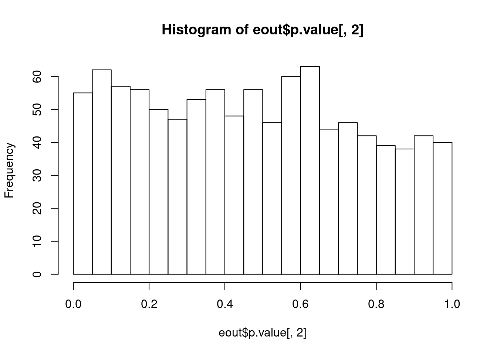
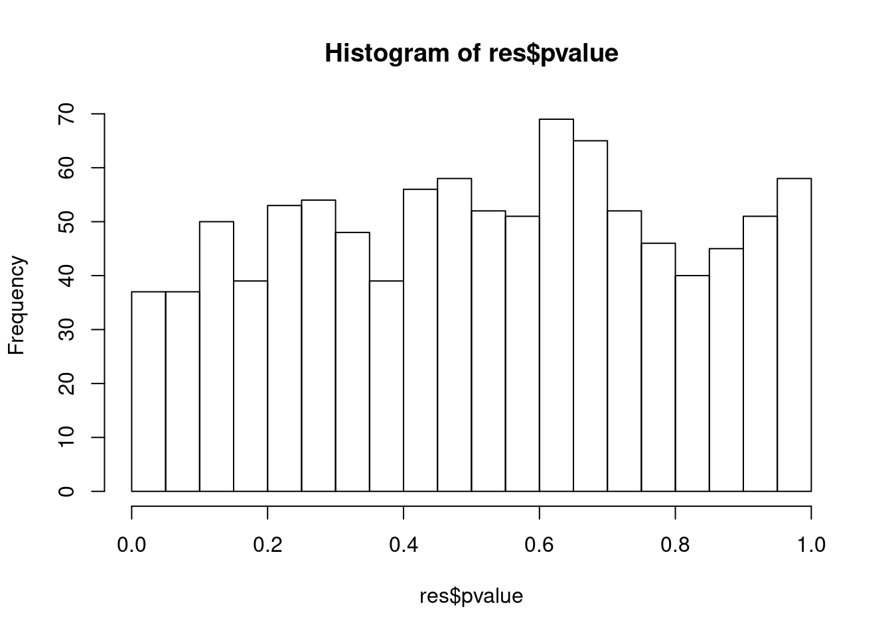
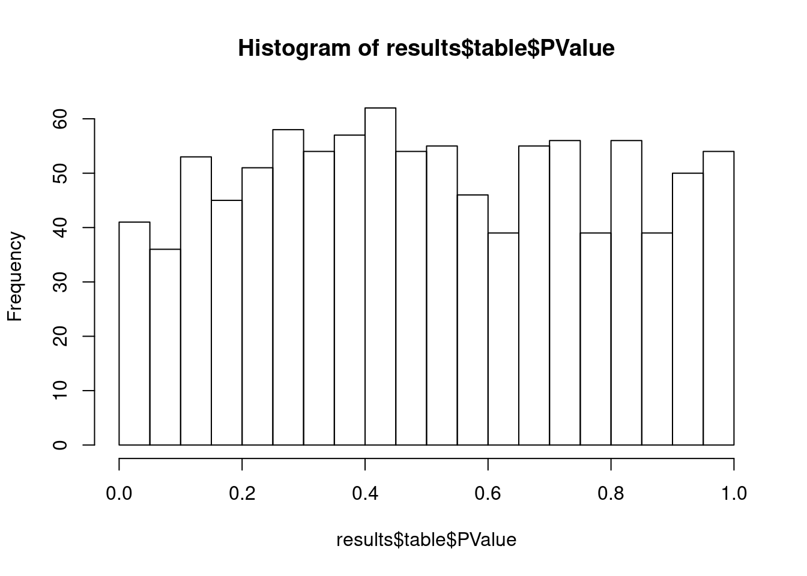
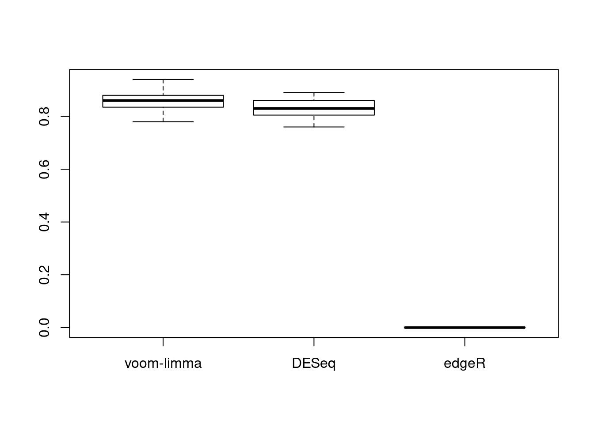
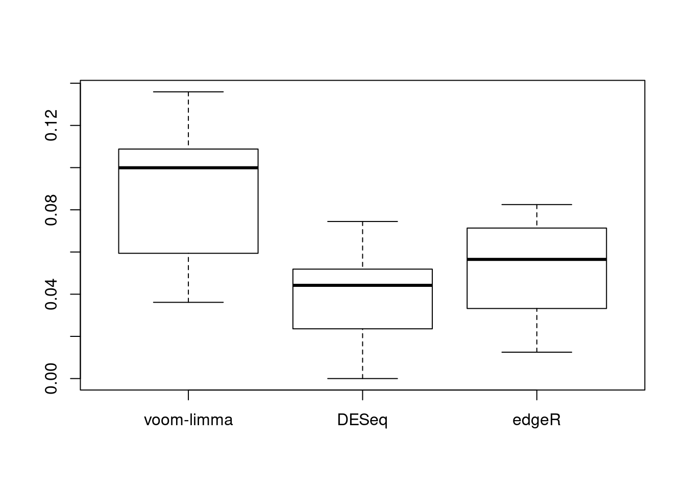
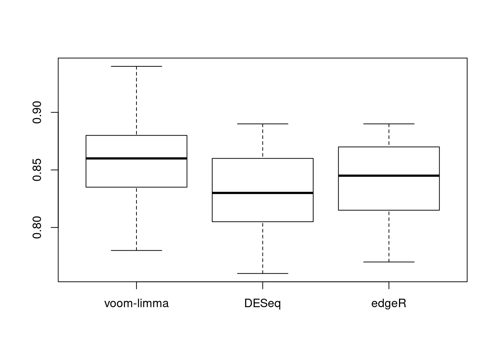

How does library size influence DE?
DongyueXie
2020-06-22
Last updated: 2020-06-22
Checks: 7 0
Knit directory: dear/
This reproducible R Markdown analysis was created with workflowr (version 1.6.0). The Checks tab describes the reproducibility checks that were applied when the results were created. The Past versions tab lists the development history.
Great! Since the R Markdown file has been committed to the Git repository, you know the exact version of the code that produced these results.
Great job! The global environment was empty. Objects defined in the global environment can affect the analysis in your R Markdown file in unknown ways. For reproduciblity it’s best to always run the code in an empty environment.
The command set.seed(20200403) was run prior to running the code in the R Markdown file. Setting a seed ensures that any results that rely on randomness, e.g. subsampling or permutations, are reproducible.
Great job! Recording the operating system, R version, and package versions is critical for reproducibility.
Nice! There were no cached chunks for this analysis, so you can be confident that you successfully produced the results during this run.
Great job! Using relative paths to the files within your workflowr project makes it easier to run your code on other machines.
Great! You are using Git for version control. Tracking code development and connecting the code version to the results is critical for reproducibility. The version displayed above was the version of the Git repository at the time these results were generated.
Note that you need to be careful to ensure that all relevant files for the analysis have been committed to Git prior to generating the results (you can use wflow_publish or wflow_git_commit). workflowr only checks the R Markdown file, but you know if there are other scripts or data files that it depends on. Below is the status of the Git repository when the results were generated:
Ignored files:
Ignored: .Rhistory
Ignored: .Rproj.user/
Untracked files:
Untracked: analysis/lash_real_data.Rmd
Untracked: analysis/log_ratio_approx.Rmd
Untracked: analysis/plnruv.Rmd
Untracked: analysis/scMash.Rmd
Untracked: code/check_size_factor.R
Untracked: code/cytokine_null_simu_cd4_yusha.R
Untracked: code/lash_real_data.R
Untracked: code/mash_example.r
Untracked: code/scMash.R
Untracked: code/scMash2.R
Untracked: code/scMash_simu.R
Untracked: data/BR_log_cpm.RDS
Untracked: data/cytokine_cd4.RData
Untracked: data/filtered_gene_bc_matrices/
Untracked: data/pbmc3k_cellType.RData
Untracked: data/pbmc3k_filtered_gene_bc_matrices.tar.gz
Untracked: output/compare_lm_sample.RData
Untracked: output/cytokine_null_simu_cd4_r250_yusha.RData
Untracked: output/lm_cytokine_Nonnull_simu_cd4.RData
Untracked: output/lm_cytokine_Nonnull_simu_cd4_2trteffect.RData
Untracked: output/lm_cytokine_Nonnull_simu_cd4_2trteffect_sizesd001.RData
Untracked: output/lm_cytokine_Nonnull_simu_cd4_2trteffect_sizesd005.RData
Untracked: output/lm_cytokine_Nonnull_simu_cd4_2trteffect_sizesd01.RData
Untracked: output/lm_cytokine_Nonnull_simu_cd4_2trteffect_sizesd4.RData
Untracked: output/lm_cytokine_null_simu_cd4.RData
Untracked: output/slm_cytokine_null_simu_cd4.RData
Note that any generated files, e.g. HTML, png, CSS, etc., are not included in this status report because it is ok for generated content to have uncommitted changes.
These are the previous versions of the R Markdown and HTML files. If you’ve configured a remote Git repository (see ?wflow_git_remote), click on the hyperlinks in the table below to view them.
| File | Version | Author | Date | Message |
|---|---|---|---|---|
| Rmd | c51b02c | DongyueXie | 2020-06-22 | wflow_publish(“analysis/library_size.Rmd”) |
Introduction
library(seqgendiff)
library(limma)
library(DESeq2)Loading required package: S4VectorsLoading required package: stats4Loading required package: BiocGenericsLoading required package: parallel
Attaching package: 'BiocGenerics'The following objects are masked from 'package:parallel':
clusterApply, clusterApplyLB, clusterCall, clusterEvalQ,
clusterExport, clusterMap, parApply, parCapply, parLapply,
parLapplyLB, parRapply, parSapply, parSapplyLBThe following object is masked from 'package:limma':
plotMAThe following objects are masked from 'package:stats':
IQR, mad, sd, var, xtabsThe following objects are masked from 'package:base':
anyDuplicated, append, as.data.frame, basename, cbind,
colMeans, colnames, colSums, dirname, do.call, duplicated,
eval, evalq, Filter, Find, get, grep, grepl, intersect,
is.unsorted, lapply, lengths, Map, mapply, match, mget, order,
paste, pmax, pmax.int, pmin, pmin.int, Position, rank, rbind,
Reduce, rowMeans, rownames, rowSums, sapply, setdiff, sort,
table, tapply, union, unique, unsplit, which, which.max,
which.min
Attaching package: 'S4Vectors'The following object is masked from 'package:base':
expand.gridLoading required package: IRangesLoading required package: GenomicRangesLoading required package: GenomeInfoDbLoading required package: SummarizedExperimentLoading required package: BiobaseWelcome to Bioconductor
Vignettes contain introductory material; view with
'browseVignettes()'. To cite Bioconductor, see
'citation("Biobase")', and for packages 'citation("pkgname")'.Loading required package: DelayedArrayLoading required package: matrixStats
Attaching package: 'matrixStats'The following objects are masked from 'package:Biobase':
anyMissing, rowMediansLoading required package: BiocParallel
Attaching package: 'DelayedArray'The following objects are masked from 'package:matrixStats':
colMaxs, colMins, colRanges, rowMaxs, rowMins, rowRangesThe following objects are masked from 'package:base':
aperm, applylibrary(edgeR)
BH = function(p,alpha=0.05){
n=length(p)
i=rank(p)
idx = which(p<=(i/n*alpha))
if(length(idx)==0){
NULL
}else{
i0= max(i[idx])
rej.idx = which(i<=i0)
rej.idx
}
}NULL setting
10 samples assigned to 2 groups. The first group has library size \(50*\)number of genes while the second one has library size \(500*\)number of genes.
set.seed(12345)
nsamp = 10
ngene = 1000
designmat = cbind(rep(c(0, 1), each = nsamp / 2),
rep(c(0, 1), length.out = nsamp))
designmat [,1] [,2]
[1,] 0 0
[2,] 0 1
[3,] 0 0
[4,] 0 1
[5,] 0 0
[6,] 1 1
[7,] 1 0
[8,] 1 1
[9,] 1 0
[10,] 1 1B = matrix(0,nrow=2,ncol=ngene)
S = rep(c(100*ngene,1000*ngene),each=5)
L = exp(designmat%*%B)
L = apply(L,1,function(z){z/sum(z)})
Y = matrix(rpois(nsamp*ngene,L%*%diag(S)),nrow=ngene)
new_design = cbind(rep(1,10),designmat)
vout = limma::voom(counts = Y, design = new_design)
lout = limma::lmFit(vout)
eout = eBayes(lout)
coefhat = coef(lout)[, -1, drop = FALSE]
hist(eout$p.value[,2],breaks = 30)
BH(eout$p.value[,2])NULLrownames(Y) = 1:nrow(Y)
colnames(Y) = 1:ncol(Y)
coldata = data.frame(trt=as.factor(designmat[,1]),sex=as.factor(designmat[,2]))
dds = DESeqDataSetFromMatrix(countData = Y,colData = coldata,design = ~trt+sex)
dds = DESeq(dds,quiet = TRUE,fitType="local")
res = results(dds,name=resultsNames(dds)[2])
hist(res$pvalue,breaks = 30)
BH(res$pvalue)NULLy = DGEList(counts = Y,group=new_design[,2])
y <- calcNormFactors(y)
y <- estimateDisp(y,design = new_design)
fit <- glmQLFit(y, new_design)
results <- glmQLFTest(fit)
hist(results$table$PValue,breaks = 30)
BH(results$table$PValue)NULLBoth limma and DEseq2 have no false discovery under NULL setting.
Thinning
set.seed(12345)
nreps=20
L = matrix(1/ngene,nrow=ngene,ncol=nsamp)
new_design = cbind(rep(1,10),designmat[,1])
fdp = matrix(nrow=nreps,ncol=3)
power = matrix(nrow=nreps,ncol=3)
for(i in 1:nreps){
which_non_null = sample(1:ngene,0.1*ngene)
non_null_idx = rep(0,ngene)
non_null_idx[which_non_null] = 1
B = (rnorm(ngene,0,1))
B = B*(non_null_idx)
Y = matrix(rpois(nsamp*ngene,L%*%diag(S)),nrow=ngene)
thout = thin_diff(mat = Y,
design_fixed = designmat[,1,drop=FALSE],
coef_fixed = cbind(B))
vout = limma::voom(counts = thout$mat, design = new_design)
lout = limma::lmFit(vout)
eout = eBayes(lout)
coldata = data.frame(trt=as.factor(designmat[,1]))
dds = DESeqDataSetFromMatrix(countData = thout$mat,colData = coldata,design = ~trt)
dds = DESeq(dds,quiet = TRUE,fitType="local")
res = results(dds,name=resultsNames(dds)[2])
fdp[i,] = c(1-sum(BH(eout$p.value[,2])%in%which_non_null)/length(BH(eout$p.value[,2])) , 1-sum(BH(res$pvalue)%in%which_non_null)/length(BH(res$pvalue)),
1-sum(BH(results$table$PValue)%in%which_non_null)/length(BH(results$table$PValue)))
power[i,] = c(sum(BH(eout$p.value[,2])%in%which_non_null)/length(which_non_null),
sum(BH(res$pvalue)%in%which_non_null)/length(which_non_null),
sum(BH(results$table$PValue)%in%which_non_null)/length(which_non_null))
#print(paste("fdp:",round(1-sum(BH(eout$p.value[,2])%in%which_non_null)/length(BH(eout$p.value[,2])),2)))
#print(paste("power:",sum(BH(eout$p.value[,2])%in%which_non_null)/length(which_non_null)))
#print(paste("fdp:",round(1-sum(BH(res$pvalue)%in%which_non_null)/length(BH(res$pvalue)),2)))
#print(paste("power:",sum(BH(res$pvalue)%in%which_non_null)/length(which_non_null)))
}
colnames(fdp)=c("voom-limma","DESeq","edgeR")
colnames(power) = c("voom-limma","DESeq","edgeR")
boxplot(fdp)
boxplot(power)
generate data from a model instead of thinning
set.seed(12345)
nreps=20
S = rep(c(1000*ngene,100*ngene),each=5)
fdp = matrix(nrow=nreps,ncol=3)
power = matrix(nrow=nreps,ncol=3)
for(i in 1:nreps){
which_non_null = sample(1:ngene,0.1*ngene)
non_null_idx = rep(0,ngene)
non_null_idx[which_non_null] = 1
#B = matrix(0,nrow=2,ncol=ngene)
B = (rnorm(ngene,0,1))
B = rbind(rep(0,ngene),B)
B = B%*%diag(non_null_idx)
L = t(exp(new_design%*%B))
#L = apply(L,1,function(z){z/sum(z)})
Y = matrix(rpois(nsamp*ngene,L%*%diag(S/ngene)),nrow=ngene)
vout = limma::voom(counts = Y, design = new_design)
lout = limma::lmFit(vout)
#lout = limma::lmFit(log(Y%*%diag(c(1/colSums(Y)))*1e6),design = new_design)
eout = eBayes(lout)
coldata = data.frame(trt=as.factor(designmat[,1]))
dds = DESeqDataSetFromMatrix(countData = Y,colData = coldata,design = ~trt)
dds = DESeq(dds,quiet = TRUE,fitType="mean")
res = results(dds,name=resultsNames(dds)[2])
y = DGEList(counts = Y,group=new_design[,2])
y <- calcNormFactors(y)
y <- estimateDisp(y,design = new_design)
fit <- glmQLFit(y, new_design)
results <- glmQLFTest(fit)
fdp[i,] = c(1-sum(BH(eout$p.value[,2])%in%which_non_null)/length(BH(eout$p.value[,2])) , 1-sum(BH(res$pvalue)%in%which_non_null)/length(BH(res$pvalue)),
1-sum(BH(results$table$PValue)%in%which_non_null)/length(BH(results$table$PValue)))
power[i,] = c(sum(BH(eout$p.value[,2])%in%which_non_null)/length(which_non_null),
sum(BH(res$pvalue)%in%which_non_null)/length(which_non_null),
sum(BH(results$table$PValue)%in%which_non_null)/length(which_non_null))
#print(paste("fdp:",round(1-sum(BH(eout$p.value[,2])%in%which_non_null)/length(BH(eout$p.value[,2])),2)))
#print(paste("power:",sum(BH(eout$p.value[,2])%in%which_non_null)/length(which_non_null)))
#print(paste("fdp:",round(1-sum(BH(res$pvalue)%in%which_non_null)/length(BH(res$pvalue)),2)))
#print(paste("power:",sum(BH(res$pvalue)%in%which_non_null)/length(which_non_null)))
}
colnames(fdp)=c("voom-limma","DESeq","edgeR")
colnames(power) = c("voom-limma","DESeq","edgeR")
boxplot(fdp)
boxplot(power)
sessionInfo()R version 3.5.1 (2018-07-02)
Platform: x86_64-pc-linux-gnu (64-bit)
Running under: Scientific Linux 7.4 (Nitrogen)
Matrix products: default
BLAS/LAPACK: /software/openblas-0.2.19-el7-x86_64/lib/libopenblas_haswellp-r0.2.19.so
locale:
[1] LC_CTYPE=en_US.UTF-8 LC_NUMERIC=C
[3] LC_TIME=en_US.UTF-8 LC_COLLATE=en_US.UTF-8
[5] LC_MONETARY=en_US.UTF-8 LC_MESSAGES=en_US.UTF-8
[7] LC_PAPER=en_US.UTF-8 LC_NAME=C
[9] LC_ADDRESS=C LC_TELEPHONE=C
[11] LC_MEASUREMENT=en_US.UTF-8 LC_IDENTIFICATION=C
attached base packages:
[1] parallel stats4 stats graphics grDevices utils datasets
[8] methods base
other attached packages:
[1] edgeR_3.24.0 DESeq2_1.22.2
[3] SummarizedExperiment_1.12.0 DelayedArray_0.8.0
[5] BiocParallel_1.16.0 matrixStats_0.54.0
[7] Biobase_2.42.0 GenomicRanges_1.34.0
[9] GenomeInfoDb_1.18.1 IRanges_2.16.0
[11] S4Vectors_0.20.1 BiocGenerics_0.28.0
[13] limma_3.38.2 seqgendiff_1.2.1
loaded via a namespace (and not attached):
[1] bit64_0.9-7 splines_3.5.1 Formula_1.2-3
[4] assertthat_0.2.0 latticeExtra_0.6-28 blob_1.1.1
[7] GenomeInfoDbData_1.2.0 yaml_2.2.0 RSQLite_2.1.1
[10] pillar_1.3.1 backports_1.1.2 lattice_0.20-38
[13] glue_1.3.0 digest_0.6.18 RColorBrewer_1.1-2
[16] promises_1.0.1 XVector_0.22.0 checkmate_1.8.5
[19] colorspace_1.3-2 htmltools_0.3.6 httpuv_1.4.5
[22] Matrix_1.2-15 plyr_1.8.4 XML_3.98-1.16
[25] pkgconfig_2.0.2 genefilter_1.64.0 zlibbioc_1.28.0
[28] xtable_1.8-3 purrr_0.3.2 scales_1.0.0
[31] whisker_0.3-2 later_0.7.5 annotate_1.60.0
[34] git2r_0.26.1 tibble_2.1.1 htmlTable_1.12
[37] ggplot2_3.1.1 nnet_7.3-12 lazyeval_0.2.1
[40] survival_2.43-1 magrittr_1.5 crayon_1.3.4
[43] memoise_1.1.0 evaluate_0.12 fs_1.3.1
[46] foreign_0.8-71 tools_3.5.1 data.table_1.12.0
[49] stringr_1.3.1 locfit_1.5-9.1 munsell_0.5.0
[52] cluster_2.0.7-1 AnnotationDbi_1.44.0 compiler_3.5.1
[55] rlang_0.4.0 grid_3.5.1 RCurl_1.95-4.11
[58] rstudioapi_0.10 htmlwidgets_1.3 bitops_1.0-6
[61] base64enc_0.1-3 rmarkdown_1.10 gtable_0.2.0
[64] DBI_1.0.0 R6_2.3.0 gridExtra_2.3
[67] knitr_1.20 dplyr_0.8.0.1 bit_1.1-14
[70] Hmisc_4.1-1 workflowr_1.6.0 rprojroot_1.3-2
[73] stringi_1.2.4 Rcpp_1.0.4.6 geneplotter_1.60.0
[76] rpart_4.1-13 acepack_1.4.1 tidyselect_0.2.5